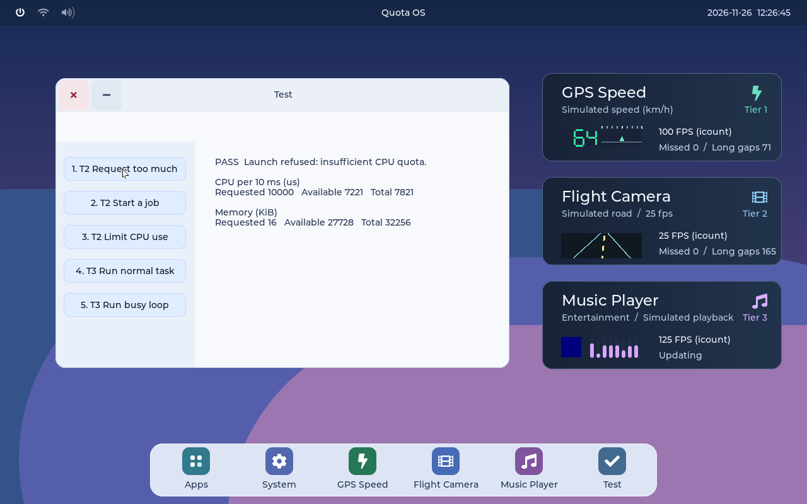

TIER 1
Vendor reserved
GPS Speed and timer service use fixed CPU slots.
ARM64 / RESOURCE-PARTITIONED OS
Quota OS is an ARM64 operating system. It reserves CPU time for critical tasks, admits applications when capacity is available, and shares spare time among ordinary workloads.


The sample apps GPS Speed, Flight Camera and Music Player show their tier on the right of each card. Flight Camera animates simulated lane markings at a target of 25 FPS.
TIER 1
GPS Speed and timer service use fixed CPU slots.
TIER 2
Flight Camera starts with user approval and sufficient capacity for its declared minimum.
TIER 3
Music Player and desktop interaction share remaining CPU time under a common cap.
CLI provides a serial console and a separate, on-demand EL0 Test application. C UI adds the native LVGL desktop. Web UI adds the Tier 3 WAP runtime with Blink, V8 and Node.js.
| Edition | QEMU RAM | ARM64 boot image |
|---|---|---|
| CLI | 17 MiB short validation · 32 MiB default | 73.5 KiB |
| C UI | 64 MiB | 685.4 KiB |
| Web UI | 1 GiB | 357.5 MiB |
CLI passed serial interaction and the standalone EL0 Test in both quota modes at 17 MiB in a short QEMU run. See the serial log.
The sizes are for the uncompressed desktop boot images. The Web UI demo package (demo.wap) is 1,705 bytes.

For C UI, write drivers or LVGL views in C, run bash tools/build-lvgl-guest.sh, then exercise admission and quotas in Apps → Test.

For Web UI system development, build Blink and Node against one shared V8 and assemble the image. App authors package a manifest, HTML and optional backend JS as a WAP, open it in Files, save and reopen it after a cold boot with the same disk.
A minimum share for a group of threads, a periodic budget for one thread and a scheduled window for a partition serve different needs. The table compares who receives CPU time and how each scheduler enforces the allocation.
| System and mechanism | Unit of allocation | How scheduling works |
|---|---|---|
| Quota OS | Application tier | GPS Speed runs in a fixed slot. Flight Camera receives a periodic budget after user approval and a capacity check. Music Player shares the capped remainder with other Tier 3 apps. Kernel quota implementation |
| QNX APS | A partition of threads | A partition has a minimum CPU share measured over a moving window. A busy partition can use time that others leave idle. QNX scheduling guide |
| seL4 MCS | A scheduling context bound to a thread | Each context has a budget and period. During synchronous IPC, a client can lend its context to a passive server so the work is charged to the caller. seL4 scheduling tutorial |
| Linux SCHED_DEADLINE | A thread requesting deadline scheduling | The thread specifies runtime, relative deadline and period. The kernel checks bandwidth before admission and schedules by deadline. By default, a thread that exhausts its budget waits for replenishment. Linux scheduler documentation |
| VxWorks 653 | A configured application partition | The module runs partitions in scheduled windows. Within a window, the partition scheduler selects tasks by priority. At the boundary, the module switches to the next scheduled partition. Wind River partitioning guide |
Published Quota OS tests record scheduling periods and guest framebuffer commits in single-core ARM64 QEMU. Display latency across these systems on identical hardware remains unmeasured.
Each edition booted independently 100 times in single-core ARM64 QEMU. In each run, a Tier 3 task ran a ten-second busy loop under memory and disk pressure. The guest timestamped each completed framebuffer submission from GPS Speed and Flight Camera.
| Edition | Runs passed | GPS Speed frames / maximum gap | Flight Camera frames / maximum gap |
|---|---|---|---|
| C UI · 64 MiB | 100 / 100 | 100,359 / 10.000 ms | 25,091 / 40.000 ms |
| Web UI · 1 GiB | 100 / 100 | 100,755 / 10.000 ms | 25,184 / 40.000 ms |
Across all 200 runs, no interval between consecutive submissions exceeded its 10 ms or 40 ms limit in raw QEMU icount ticks. Neither edition recorded a missed submission deadline, a Tier 2 budget shortfall or a Tier 3 pool overrun. Timing ends at the guest framebuffer write. Host presentation and physical display latency remain unmeasured.


Download the ARM64 image and launch instructions ↗
To run from a local checkout, install Git and QEMU with ARM64 system emulation, then run:
git clone https://github.com/leiquan/Quota-OS.git
cd Quota-OS
bash tools/run-files.shOn macOS with Homebrew LLVM and LLD installed, run these commands from the repository root. QEMU ARM64 runs the resulting kernel with one Cortex-A35 core and 64 MiB of RAM.
bash tools/build-lvgl-macos.sh
QUOTA_KERNEL=build/quotaos-lvgl.bin bash tools/run-files.shIn an empty Notes document, choose C Example or type the code below. Choose Save As... and enter demo.c. Open Apps → Shell, type a command at the quota> prompt, and press Enter. Type cc on its own to see an example using your saved filename.
int main(void) {
puts("Hello, Quota OS!");
return 0;
}cc demo.c -o hello
./helloThe initial C subset accepts a header-free int main(void), one puts string literal, and return 0. The executable runs in Tier 3. Tier 2 launch parameters are pending.